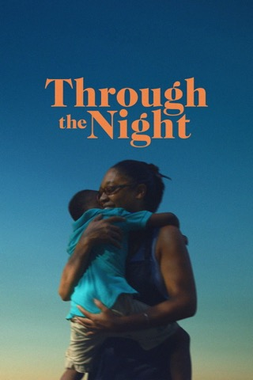

About the film

To make ends meet, people in the U.S. are working longer hours across multiple jobs. This modern reality of non-stop work has resulted in an unexpected phenomenon: the flourishing of 24-hour daycare centers.
Through the Night
explores the personal cost of our modern economy through the stories of two working mothers and a child care provider, whose lives intersect at a 24-hour daycare center. A pre-recorded, post screening discussion with filmmaker Loira Limbal, moderated by Ai-jen Poo, will be available in addition to the film.